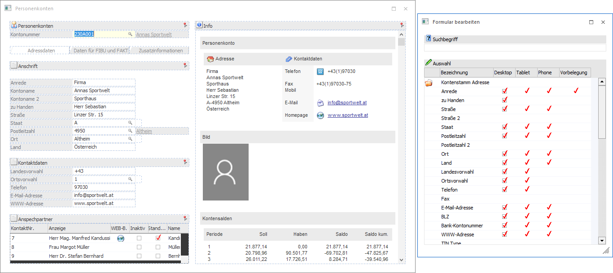
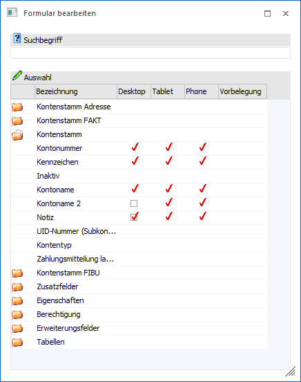
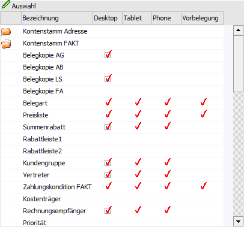
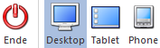

Mit Hilfe des Buttons "Formular bearbeiten", welcher bei der Nutzung von individuellen Formularen zur Verfügung steht, kann das Fenster "Formular bearbeiten" aufgerufen werden.
Neben der Darstellung dieses Fensters wird das aktuell verwendete Formular in einen Bearbeitungsmodus versetzt.
Hinweis
Folgende Punkte sind bei der Bearbeitung zu beachten:
ü Wenn das individuelle Formular aus mehreren Registern besteht, so muss zunächst das zu bearbeitende Register gewählt und dann der Button "Formular bearbeiten" gedrückt werden.
ü Veränderungen am strukturellen Aufbau des Formulars (z.B. neue Register) oder der allgemeinen optischen Darstellung (z.B. mehr oder weniger Spalten in einer Überschrift) müssten direkt in den Stammdaten (WinLine START - Vorlagen - Vorlagen Anlage - Individuelle Formulare) erfolgen.
Bearbeitungsmodus

Im Bearbeitungsmodus sind folgende Arbeiten möglich:
ü In dem Formular können Felder und Tabellen per Drag & Drop verschoben werden.
Hinweis
Das Verschieben von Buttons, Registern, Überschiften, Grafiken, OIF-Elementen, etc. ist nicht möglich. Zusätzlich muss das Hauptfeld (z.B. bei Vorlagen aus dem Bereich "Stammdaten" die jeweilige Nummer) immer das erste Element in der Vorlage sein und Tabellen bzw. RTF-Textfelder am Ende stehen.
ü Aus dem Formular können Felder und Tabellen per Drag & Drop (in das Fenster "Formular bearbeiten") entfernt werden. Das Entfernen kann dabei auch direkt im Fenster "Formular bearbeiten" geschehen, in dem die jeweilige Checkbox deaktiviert wird.
Hinweis
Das Löschen des Hauptfelds bzw. von Buttons, Registern, Überschiften, Grafiken, OIF-Elementen, Muss-Feldern, etc. ist nicht möglich.
ü In das Formular können neue Felder und Tabellen per Drag & Drop aus dem Fenster "Formular bearbeiten" hinzugefügt werden.
Hinweis
Die maximale Anzahl von Feldern pro Formular beträgt 200!
Formular bearbeiten
In diesem Fenster können aus dem jeweiligen Datenbereich die Felder bzw. die Elemente gesucht und übernommen werden, die für das Verändern des individuellen Formulars benötigt werden.

Suchbegriff
Ø Suchbegriff
An dieser Stelle kann durch die Eingabe und Bestätigung eines Suchbegriffs in den zur Verfügung gestellten Datenbereichen nach passenden Einträgen gesucht werden. Durch das Entfernen und Bestätigen des (leeren) Suchbegriffs werden wieder alle Einträge in der Datentabelle angezeigt.
Hinweis
Es handelt sich hierbei um eine Volltextsuche, d.h. durch die Eingabe von "leit" würde das Feld "Postleitzahl" gefunden werden.
Tabelle "Auswahl"

Je nach Vorlagentyp werden in der Tabelle unterschiedliche Datenbereiche zur Verfügung gestellt. Durch die Anwahl des Ordnersymbols können die Bereiche geöffnet und Felder in das Formular übernommen werden. Die Übernahme eines Felds erfolgt dann per "Drag & Drop" in das individuelle Formular.
Hinweis
Sobald ein Feld übernommen wurde wird es in der Auswahltabelle nicht mehr zur Verfügung gestellt. D.h. jedes Feld kann nur 1x in der Vorlage vorkommen.
Ø Bezeichnung
In dieser Spalte wird der Name des Felds bzw. der Tabelle angezeigt.
Ø Desktop / Tablet / Phone
An dieser Stelle wird mit Hilfe von Checkboxen dargestellt, ob das Element im Aufbau des Formulars bereits enthalten ist. Hierbei wird zwischen einzelnen Device (Endgeräten) unterschieden.
Hinweis
Mit Hilfe der Buttons "Desktop", "Tablet" und "Phone" kann gewählt werden, für welches Device eine Änderung vorgenommen werden soll.
Ø Vorbelegung
An dieser Stelle wird über eine Checkbox angezeigt, ob eine Vorbelegung für das Feld lt. Stammdaten (WinLine START - Vorlagen - Vorlagen Anlage - Individuelle Formulare) vorhanden ist.
Tabellenbuttons

Ø Ausgabe Excel
Durch Anwahl des Buttons "Ausgabe Excel" wird der Inhalt der Tabelle an Microsoft Excel übergeben.
Ø Tabelleneinstellungen speichern
Die Spalten einer Tabelle können grundsätzlich an beliebige Positionen verschoben, bzw. in der Breite entsprechend angepasst werden. Durch Anwahl des Buttons "Tabelleneinstellungen speichern" werden die Einstellungen benutzerspezifisch gespeichert und bei dem nächsten Aufruf des Programmpunktes wieder vorgeschlagen.
Ø Gesamteinstellungen speichern
Im Gegensatz zu "Tabelleneinstellungen speichern" können mit "Gesamteinstellungen speichern" mehrere Tabellenaufbauten gespeichert und nach Wunsch geladen werden. Zusätzlich werden Sonderfunktionen der Tabelle (z.B. "Spalte gruppieren") ebenfalls bei der Speicherung bedacht.
Button

Ø Ende
Durch Anwahl des Buttons "Ende" bzw. der Taste ESC wird die Bearbeitung des Formulars beendet. Ob eine Speicherung der Änderungen erfolgen soll wird über den Button "Formular speichern" definiert.
Ø Desktop / Tablet / Phone
Mit Hilfe dieser Buttons kann das Device, für welches Änderungen getätigt werden sollen, gewechselt werden.